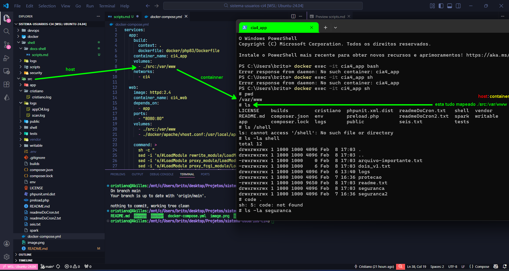

cristiano@Akilles:/mnt/c/Users/brito/desktop/Projetos/sistema-usuarios-ci4$ docker ps
CONTAINER ID IMAGE COMMAND CREATED STATUS PORTS NAMES
dc75d7619cf8 httpd:2.4 "sh -c ' sed -i 's/#…" 45 seconds ago Up 43 seconds 0.0.0.0:8080->80/tcp, [::]:8080->80/tcp ci4_web
887ca551aa6c sistema-usuarios-ci4-app "docker-php-entrypoi…" 45 seconds ago Up 44 seconds 9000/tcp ci4_app
61468b0f12ae mysql:8 "docker-entrypoint.s…" 45 seconds ago Up 44 seconds 0.0.0.0:3306->3306/tcp, [::]:3306->3306/tcp ci4_db

entrando no container e listando
PS C:\Users\brito> docker exec -it ci4_app sh
# pwd
/var/www
# ls
LICENSE builds cristiano phpunit.xml.dist readmeDoCron.txt shell vendor
README.md composer.json env preload.php readmeDoCron2.txt spark writable
app composer.lock logs public seis.txt tests
| HOST | : | CONTAINER |
|---|---|---|
/src |
: | /var/www |
volumes:
- ./src:/var/www
root@887ca551aa6c:/var/www/shell/seguranca# cat pegarEntradaUsuario-00.sh
#!/bin/bash
echo 'teste de permissao'
x 1 1000 1000 39 Feb 28 12:48 pegarEntradaUsuario-00.sh./pegarEntradaUsuario-00.sh#!/bin/bash
echo 'teste de permissao'
echo "digite seu nome: "
read NOME
echo "bem vindo! $NOME"
root@887ca551aa6c:/var/www/shell/seguranca# cat decisaoVerificacao-01.sh
#!/bin/bash
##############################################
# esse escript verifica se uma pasta existe
# cria a pasta se ela nao existir
# verifica se um arquivo existe
# mostra mensagens claras de status
##############################################
echo "INICIO DO SCRIPT"
PASTA="/var/www/shell/logs"
ARQUI="$PASTA/verificaPastaArquivo.log"
if [ -d "$PASTA" ]; then
echo "pasta $PASTA ja existe."
else
echo "pasta nao existe criando. . ."
mkdir $PASTA
fi
if [ -f "$ARQUI" ]; then
echo "arquivo existe."
else
echo "arquivo nao existe criando..."
touch $ARQUI
fi
echo "status final"
ls -l $PASTA
echo "=====[ FIM ]====="
adicionando cor ao script
root@887ca551aa6c:/var/www/shell/seguranca# cat decisaoVerificacao-01.sh
#!/bin/bash
##############################################
# esse escript verifica se uma pasta existe
# cria a pasta se ela nao existir
# verifica se um arquivo existe
# mostra mensagens claras de status
##############################################
echo "INICIO DO SCRIPT"
#############################################
VERDE='\033[0;32m'
AMARELO='\033[1;33m'
VERMELHO='\033[0;31m'
AZUL='\033[0;34m'
AZUL_CLARO='\033[1;34'
RESET='\033[0m'
#############################################
PASTA="/var/www/shell/logs"
ARQUI="$PASTA/verificaPastaArquivo.log"
if [ -d "$PASTA" ]; then
echo -e "pasta${VERDE}\t[ $PASTA ]\t\t\t\t\t${RESET}ja existe."
else
echo "pasta nao existe criando. . ."
mkdir $PASTA
fi
if [ -f "$ARQUI" ]; then
echo -e "arquivo${AZUL}\t[ $ARQUI ]\t${RESET}ja existe."
else
echo "arquivo nao existe criando..."
touch $ARQUI
fi
echo "status final"
ls -l $PASTA
echo "=====[ FIM ]====="
saida:
root@887ca551aa6c:/var/www/shell/seguranca# ./decisaoVerificacao-01.sh
INICIO DO SCRIPT
pasta [ /var/www/shell/logs ] ja existe.
arquivo [ /var/www/shell/logs/verificaPastaArquivo.log ] ja existe.
status final
total 4
-rwxrwxrwx 1 1000 1000 882 Feb 6 13:40 scan_extesoes.log
-rwxrwxrwx 1 1000 1000 0 Feb 28 13:55 verificaPastaArquivo.log
=====[ FIM ]=====
procura por pastas e arquivos
root@887ca551aa6c:/var/www/shell/seguranca# cat percorrePastaAnalizaArquivos-02.sh
#!/bin/bash
##################################
# script que percorre uma pasta
# analiza arquivos
# mostra informacoes
##################################
VERDE='\033[0;32m'
AMARELO='\033[1;33m'
RESET='\033[0m'
echo '----- [ varredura de arquivos ] -----'
PASTA='/var/www/shell'
for ITEM in $PASTA/*
do
if [ -d "$ITEM" ]; then
echo -e "${VERDE}[PASTA ]${RESET}\t $ITEM"
elif [ -f "$ITEM" ]; then
echo -e "${AMARELO}[ARQUIVO]${RESET}\t $ITEM"
fi
done
date
echo '----- [ FIM DO SCRIPT ] -----'
root@887ca551aa6c:/var/www/shell/seguranca#
root@887ca551aa6c:/var/www/shell/seguranca# ./percorrePastaAnalizaArquivos-02.sh
saida:
----- [ varredura de arquivos ] -----
[ARQUIVO] /var/www/shell/arquivo-importante.txt
[ARQUIVO] /var/www/shell/dois_v1.txt
[PASTA ] /var/www/shell/logs
[PASTA ] /var/www/shell/protecao
[ARQUIVO] /var/www/shell/readme.txt
[PASTA ] /var/www/shell/seguranca
[PASTA ] /var/www/shell/seguranca2
Sat Feb 28 14:51:31 UTC 2026
----- [ FIM DO SCRIPT ] -----
graph LR
A[Início] --> B{Decisão?}
B -->|Sim| C[Sucesso]
B -->|Não| D[Erro]
C --> E[Fim]
D --> E
Resultado (quando o lugar suporta Mermaid):